These pages are dedicated to the wonderful people we met during our many years travelling as liveaboards.
We learned a great deal over the years but there is one thing that the liveaboard community hold very important and that is the term 'Pay Forward'
Travelling around by yacht, the boats and people generally meet up on several occasions, especially so as they may be heading for the same harbour or island.
On the right you will see a few pictures and short dialogue about each of the boats we particularly spent time with and the families on those yeachts.
We are eternally grateful to them all for their friendship, help and support during our adventures.
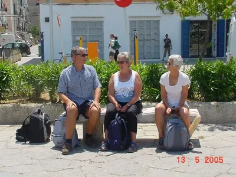
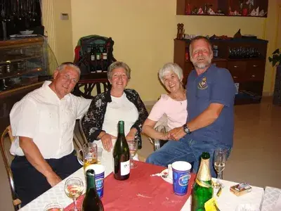
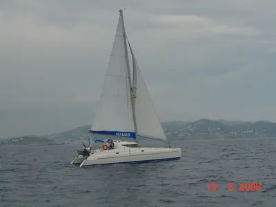
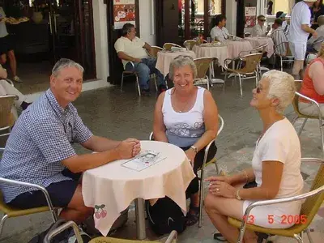
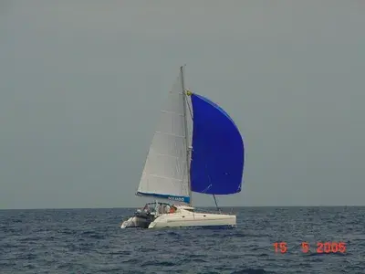
After many smaller adventures, we reached what was to be our winter home for the year 2004 and that was Almerimar on the Mediterranean coast of Spain approximately 133 nautical miles East of Gibraltar.
We entered the marina and tied up to the berth where the harbourmasters office was located. Coming in right behind us was Mambo, a 40ft catamaran. We helped them with their mooring lines and introduced ourselves to the owners of Mambo, Jan & Max, who were also to berth in Almerimar for the winter.
We had a great deal of fun over the winter, together with Jan & Max, exploring the local area, eating out in the many restaurants and attending bouls and dances. Lots of good people and a great time was had by all.
Jan & Max were experienced cruising sailors and were happy to share their knowledge with us and we were very grateful to them for lots and lots of tips about many aspects of sailing in the Med. We spent some two years in company with Jan & Max, on and off, either sailing together as we did through the Balearics or berthing in the same marinas for winter. We spent the full winter of 2006 together with them in Marmaris Marin, a great winter with a restaurant in the marina which probably was the nearest I have ever seen to the top restaurants of Europe and the world.
Jan & Max were very close friends and we enjoyed many pleasant times together during our time in the Mediterranean. Sadly our good friend Max 'crossed the bar' in 2011. We are still in contact with Jan.
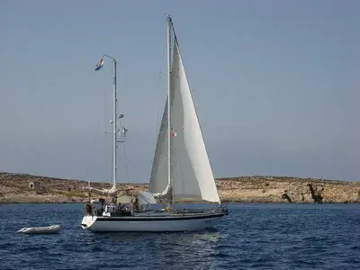
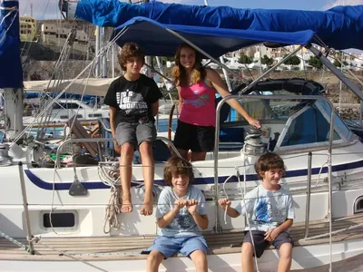
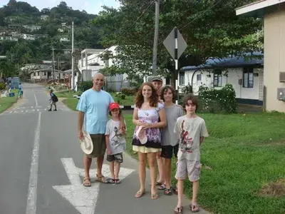
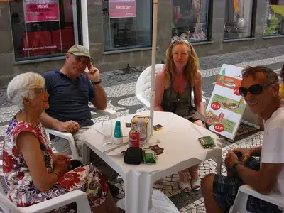
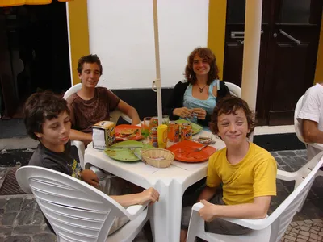
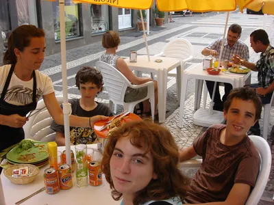
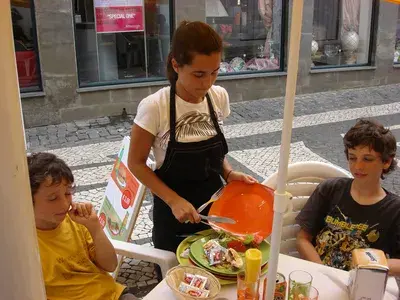
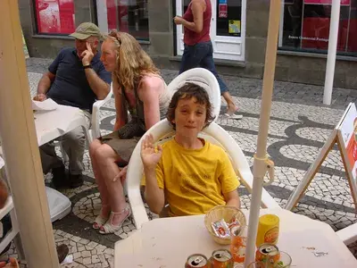
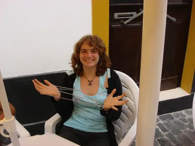
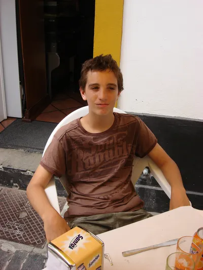
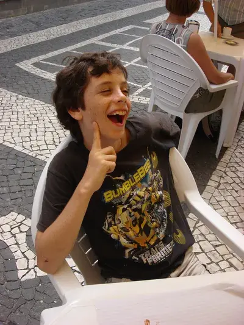
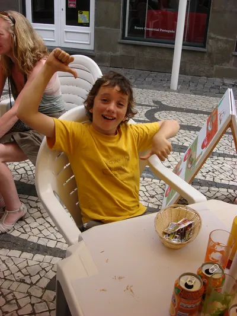
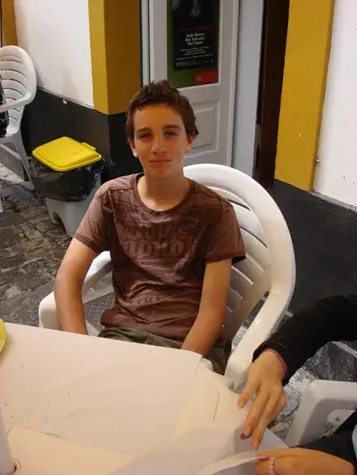
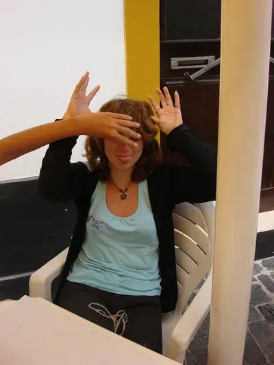
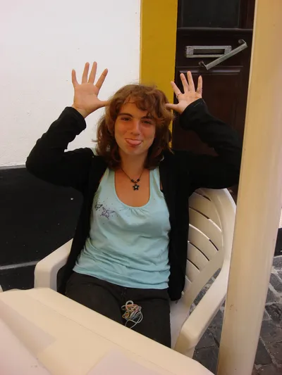
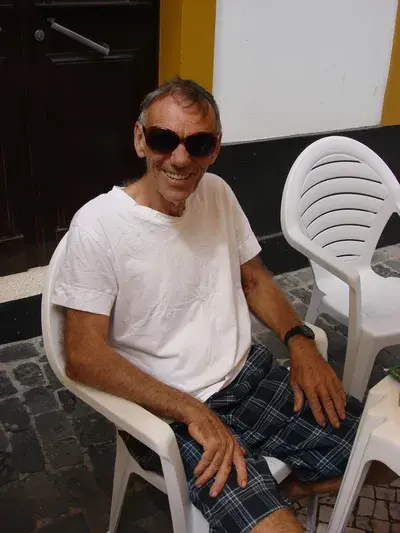
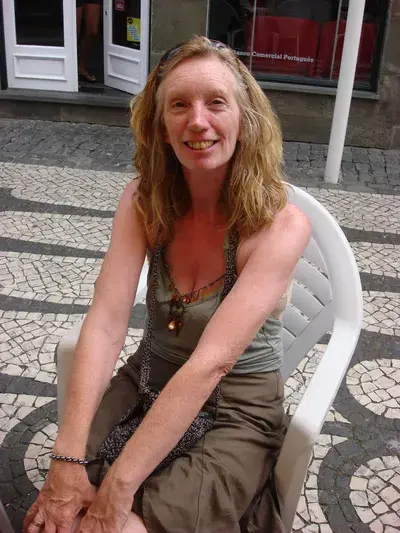
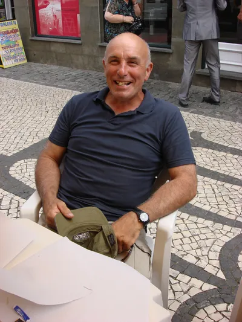
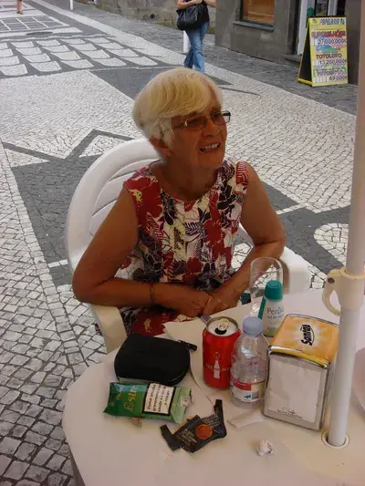
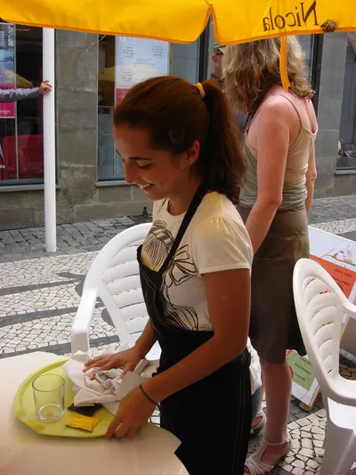
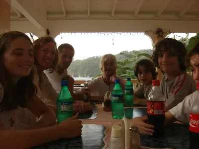
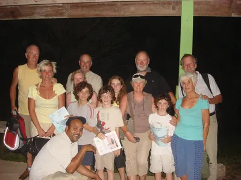
Jim, Sharon and their children -- Wendreda
The things that happen when cruising are not always what you might expect. After a pretty poor sail from Madeira, we arrived at the small marina on Graciosa, the small island off the North East corner of Lanzarotte in the Canary Islands. Also berthed in Graciosa was a yacht called Wendreda and we were lucky enough to meet Jim and Sharon, and their four children Michelle, James, Martin and Peter. This wonderful family had been heading North up the Portuguese mainland coast when they suddenly thought 'why are we heading North to the cold instead of South to the Sun', at which point they turned around and eventually met up with us on Kiah, in Graciosa. We spent much time in company with Jim and Sharon and their lovely children, exploring the Canary Islands together and then heading off to the Caribbean together.
We crossed the Atlantic in both directions, in company with Wendreda. Ocassionally Jim & Sharon would head for a different place to us but having determined that the best place to spend our first winter in the USA should be Deltaville in Virginia, we still met up on numerous occasions during our voyages North from the Caribbean Islands. Jim & Sharon are wonderful people and we are very pleased to have made their acquaintance and to have spent so much time with them and their lovely children. We are still in contact with Jim & Sharon and their family.